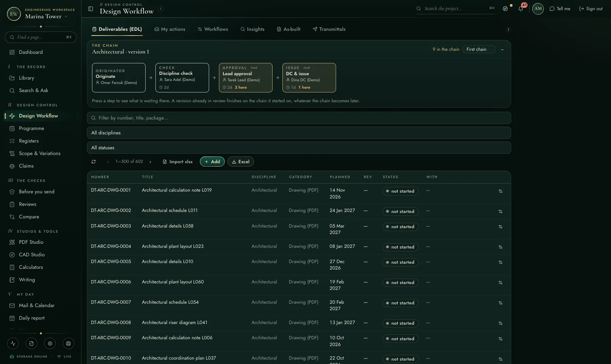
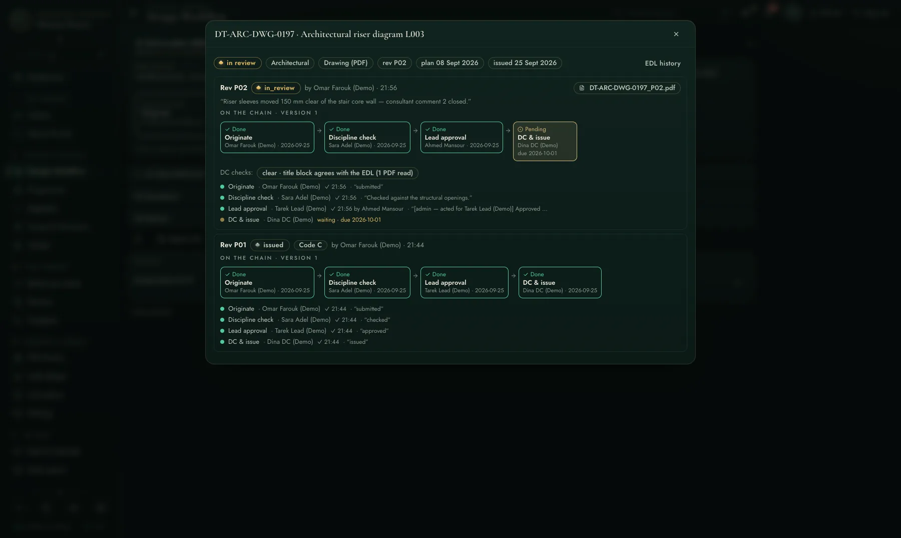
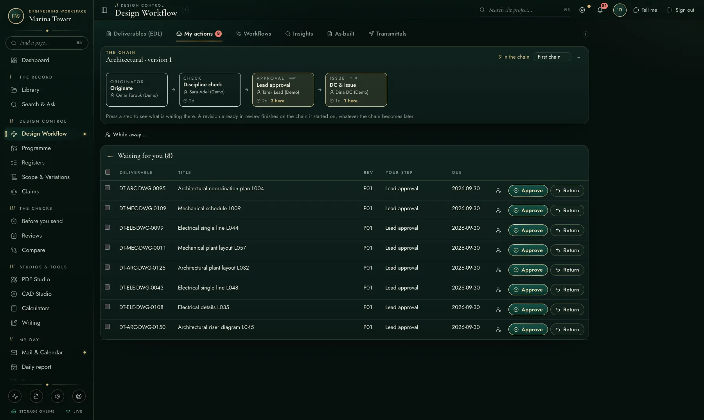
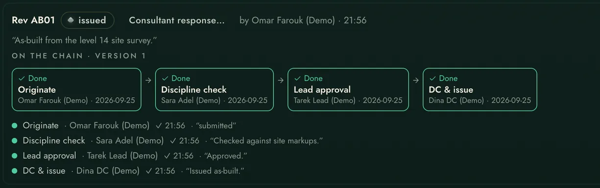

The deliverables list is the backbone of design management — here it is alive: every row knows its chain, its dates, and who is sitting on it.
Filter by discipline and status, import the list you already have in Excel, export the view you are looking at. Every row shows its pending step and who owes it — overdue in red, not in a report next week.


P01 ran the full chain and was issued; the consultant returned Code C, the chain reopened itself, and P02 now waits on DC & issue with a working-day due date — the admin acting for an absent approver, stamped on the record.
Everything waiting on you across every deliverable, with batch approve when it is a stack and a 'While away' delegation so leave never stalls a chain.


AB revisions run on the same chains and the same evidence trail, without ever disturbing the issued status of the design record — coverage reported per discipline.
The full sign-off machine — built inside a mega-project's delivery, not a demo.
"The field" is the usual toolchain — the per-user construction cloud and the separate applications around it. Good tools; the difference here is one integrated record, on your own server.